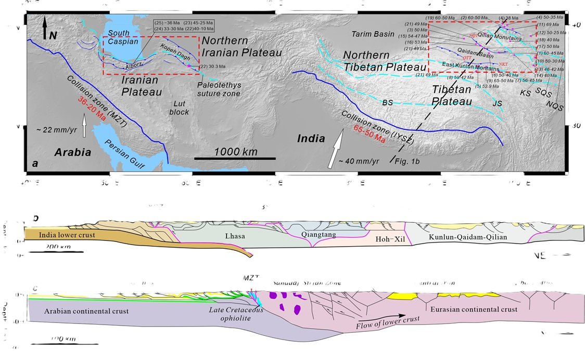
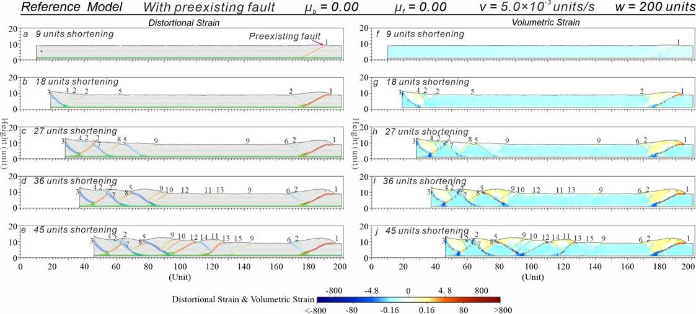
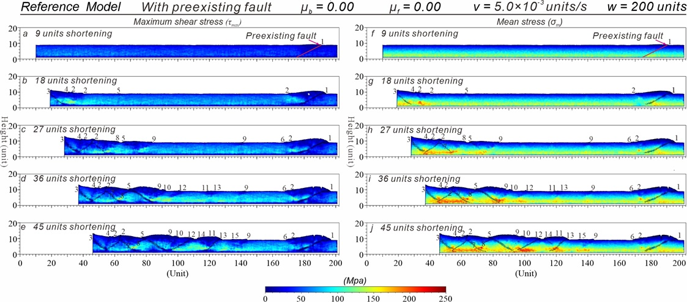
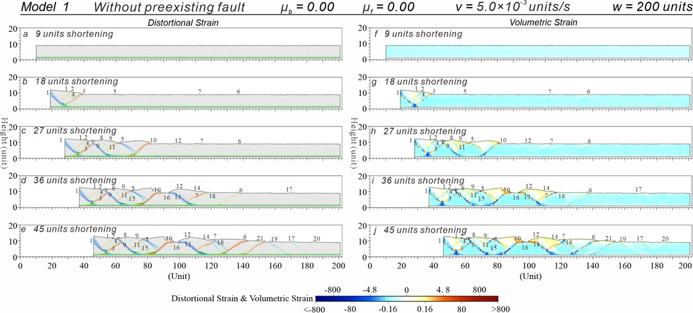
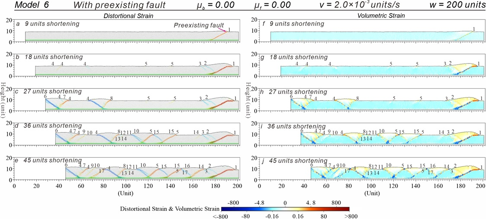
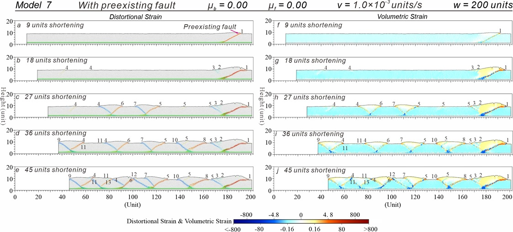

经典的库仑临界楔理论（Coulomb critical wedge）是解释冲断楔体生长过程的基本理论（Chapple, 1978; Dahlen, 1990; Davis and Engelder, 1985; Davis et al., 1983）。该理论认为冲断楔的变形由后陆向前陆依次发育，即远端变形最晚发生。然而，越来越多的地质证据却表明，远离南部碰撞带的青藏高原北部和伊朗高原北部在印度和阿拉伯与欧亚大陆碰撞后不久就发生了变形（图1）。此外，尽管软弱下地壳和远端先存断层（或弱带）普遍存在，但它们与早期远端变形的关系仍不清楚。
针对上述问题，中国科学院青藏高原研究所何建坤研究员及其团队的博士生周超，王卫民副研究员，王信国高级工程师，博士生赵由佳和江勇，与中国科学技术大学地球与空间科学学院苏浩博士合作，依托国家自然科学基金项目（42120104004, 42174112）和“第二次青藏高原综合科学考察研究”专项（2019QZKK0707）的资助，利用ZDEM（李长圣，2019）开展离散元数值模拟实验并进行应力应变分析（Morgan，2015），探讨了远端先存断层、基底滑脱层和早期远端变形传递之间的关系。
离散元数值模拟实验表明：
- 先存断层的存在是远端发生早期变形的必要条件；
- 远端先存断层能否在早期发生变形依赖于基底滑脱层的强度，而与模型宽度无关；强的基底滑脱层无法激活远端先存断层，相反，弱的基底滑脱层可以使它们在早期发生变形；
- 在弱基底滑脱层的情况下，较慢的缩短速率不仅有利于远端先存断层在早期吸收更大的缩短，而且冲断楔的变形顺序会更加明显的偏离顺序向前的变形传递方式。
这些发现表明，远端先存断层的优先变形在力学上受控于弱的基底滑脱层。结合地质和地球物理观测，我们认为在阿拉伯和印度板块与欧亚板块碰撞后不久，青藏高原北部和伊朗高原北部出现的早期变形很可能是先存断层（弱带）在软弱下地壳的作用下发生优先活化变形的结果(Zhou et al., 2024)。
题目
Discrete element modeling of distal deformation propagation in thrust wedge and Implications for early deformation on Northern Tibetan and Iranian Plateaus
作者
Chao Zhou1,2, Jiankun He1,2, Hao Su3, Weimin Wang1, Xinguo Wang1, Youjia Zhao1,2, Yong Jiang1,2
- State Key Laboratory of Tibetan Plateau Earth System, Environment and Resources (TPESER), Institute of Tibetan Plateau Research, Chinese Academy of Sciences, Beijing 100101, China
- University of Chinese Academy of Sciences, Beijing 100049, China
- Laboratory of Seismology and Physics of Earth’s Interior, School of Earth and Space Sciences, University of Science and Technology of China, Hefei, China
- Correspondence to: Jiankun He (jkhe@itpcas.ac.cn)
摘要
Coulomb critical wedge theory predicts that thrust wedges would grow sequentially from the hinterland to the foreland, meaning that distal deformation occurs last. However, in the northern Tibetan and Iranian Plateaus, far away from the southern collision zones, widespread deformation occurs soon after collisions of Arabia and India with Eurasia. Additionally, despite the prevalence of weak lower crust and distal pre-existing faults or weak zones, their relationship to early distal deformation remains poorly understood. For this reason, we run systematic experiments of discrete element models involving basal d´ecollement layer as well as distal pre-existing fault. Our model results reveal that (1) the presence of pre-existing faults is necessary for the occurrence of early distal deformation; (2) the early deformation of distal pre-existing fault is dependent on basal d´ecollement strength and independent of model width; (3) strong basal d´ecollement fails to activate the distal pre-existing faults, instead weak basal d´ecollement can deform them at the early stage; (4) in the presence of weak basal d´ecollement, a slower shortening rate not only facilitates greater shortening absorption by the distal pre-existing fault at the early stage but also results in a more pronounced deviation from sequentially-forward deformation propagation. These findings demonstrate that the preferential reactivation deformations of distal pre-existing faults are mechanically controlled by a weak basal d´ecollement layer. Together with geological and geophysical observations, we suggest that the early deformations of northern Tibetan and Iranian Plateaus may be the result of the reactivation of pre-existing faults due to the existence of weak lower crust soon after collisions.

Figure 1. (a) Early deformation superimposed on topographic reliefs at and around the Tibetan and Iranian Plateaus (Tectonic information modified from François et al., 2014; Gao et al., 2013; He and Chéry, 2008; Ye et al., 2021). The locations of collision zones (IYSZ and MZT) are drawn from Yin, 2006 and Su and Zhou, 2020. Sutures are drawn from Robert et al., 2014 and P. Zhang et al., 2022. IYSZ = Indus-Yarlung suture zone, MZT = Main Zagros Thrust, BS = Bangong-Nujiang suture zone, JS = Jinsha suture zone, KS = Kunlun suture zone, SQS = South Qilian suture zone, NQS = Nouth Qilian suture zone, NTP = northern Tibetan Plateau, NIP = northern Iranian Plateau. QTT = Qiman Tagh thrust, NKT = North Kunlun thrust, NQT = North Qaidam thrust. References: (1) He et al., 2018; (2) He et al., 2017a; (3) Y. Wang et al., 2015; (4) An et al., 2020; (5) Chen et al., 2011; (6) F. Wang et al., 2016; (7) G. Wang et al., 2007; (8) A. Wang et al., 2010; (9) Zhuang et al., 2018; (10) J. Zhang et al., 2015; (11) Lin et al., 2019; (12) B. Zhang et al., 2017; (13) X. Wang et al., 2016; (14) Qi et al., 2016; (15) Jian et al., 2018; (16) Du et al., 2018; (17) Cheng et al., 2016; (18) Qi et al., 2015; (19) He et al., 2022; (20) Li et al., 2012; (21) Yin and Harrison, 2000; (22) François et al., 2014; (23) Horton et al., 2008; (24) Rezaeian, 2008; (25) Ballato et al., 2010. (b) Representative N-S structural profile across the Tibetan Plateau (modified by Ding et al., 2022 after Kapp & DeCelles, 2019). © Representative N-S structural profile across the Iranian Plateau (after Morley et al., 2009 based on data from Guest et al., 2006b and Ballato et al., 2008 for the Alborz Mountains, from McQuarrie, 2004 for the Zagros Mountains, and from Agard et al., 2005 for the Sanadaj-Sirjan zone).

Figure 3. Results of Reference Model with distal pre-existing fault, low friction coefficient of basal décollement μb = 0.00, low friction coefficient of basal décollement μf = 0.00, faster shortening rate v = 5.0 × 10-3 units/s and initial width w = 200 units. (a-e) Sequential results with distortional strains superimposed on the deformed particles. (f-j) Sequential results of volumetric strains. Numbering denotes the initiation sequence of thrusts (same in the following figures).

Figure 4. Stress results of Reference Model. (a-e) Maximum shear stress. (f-j) Mean stress.

Figure 5. Results of Model 1. (a-e) Sequential results with distortional strains superimposed on the deformed particles. (f-j) Sequential results of volumetric strains.

Figure 9. Results of Model 6. (a-e) Sequential results with distortional strains superimposed on the deformed particles. (f-j) Sequential results of volumetric strains.

Figure 10. Results of Model 7. (a-e) Sequential results with distortional strains superimposed on the deformed particles. (f-j) Sequential results of volumetric strains.
致谢
The software used for the simulation experiments was ZDEM (https://geovbox.com/en/), a discrete element numerical simulation software developed by Dr. Chang-Sheng Li. We thank Julia Morgan at Rice University for providing her discrete element code (RICEBAL v5.4) and post-processing scripts and algorithms, which have been used to process and display the model outputs presented in our modeling. We acknowledge Beijing PARATERA Tech CO., Ltd. for providing HPC resources that have contributed to the research results reported in this paper (https://paratera.com/). This paper benefited significantly from the thorough and constructive comments and suggestions by two anonymous reviewers, and Editor Dr. Jianhua Li. This work was jointly supported by the Natural Science Foundation of China (No. 42120104004 and 42174112), and the Second Tibetan Plateau Scientific Expedition and Research Program (No. 2019QZKK0708).
参考文献
限于篇幅，参考文献详见：Zhou, C., He, J., Su, H., Wang, W., Wang, X., Zhao, Y., Jiang, Y. 2024. Discrete element modeling of distal deformation propagation in thrust wedge and Implications for early deformation on Northern Tibetan and Iranian Plateaus. Journal of Structural Geology, 184, 105150. https://doi.org/10.1016/j.jsg.2024.105150.
附件（实验过程）
Supplementary data to this article can be found online at https://doi.org/10.1016/j.jsg.2024.105150.